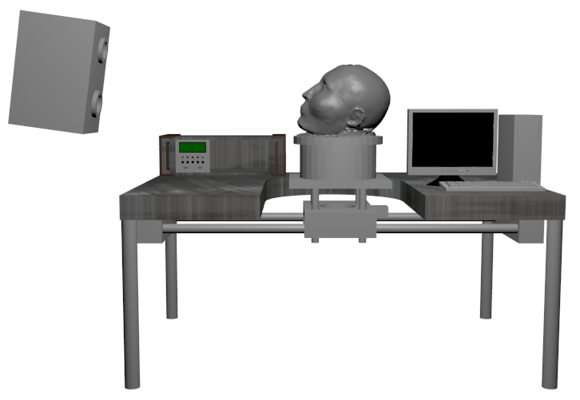

Kapitel 1 Einleitung

Ein 3D-Laserscanner bietet vielfältige Möglichkeiten und Einsatzgebiete. Die Haupt-einsatzgebiete finden sich in der Bauteileprüfung, der Erstellung von Finite-Elemente-Daten in Verbindung mit Bauteilanalyse, der Erstellung von 3D-Daten, der Kontrolle von Zubehörteilen und dem Reverse-Engineering.
Im Besitz der Fachhochschule Koblenz befindet sich ein komplettes 3D-Laserer-fassungssystem. Dazu gehören eine Erfassungssoftware, ein 3D-Laserscanner und ein Drehtisch. Bisher müssen für eine Aufnahme, alle Komponenten zueinander passen. Der Drehtisch in diesem System ist jedoch ein Eigenbau der Fachhochschule Koblenz und die darin verbaute Drehtischsteuerung nicht kompatibel zu denen, von der Erfassungssoftware unterstützten, Drehtischsteuerungen.
Mittels eines Mikrocontrollers soll der vorhandene Aufbau so erweitert werden, dass der Drehtisch von der Software angesteuert werden kann und so der volle Umfang des Systems nutzbar gemacht werden.
Dabei sind folgende Aufgaben zu realisieren:
Der Aufbau der Arbeit gliedert sich im Wesentlichen in die Vorstellung der vorhandenen Hard- und Software, dem chronologischen Arbeitsablauf während des Projektes, ein Kapitel das Probleme und deren Lösungen aufzeigt, in ein Fazit und mögliche zukünftige Verbesserungen. Im Anhang befindet sich eine Schritt-für-Schritt-Anleitung die es Laien ermöglicht 3D-Modelle aufzunehmen und zu exportieren.